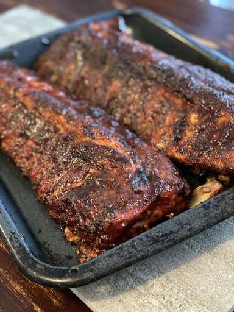

Ribs

Description
Cooking ribs on the grill is easier than you think. Learn how to perfectly grill baby back ribs every time with this foolproof recipe!
Ingredients
- 1 tablespoon ground cumin
- 1 tablespoon chili powder
- 1 tablespoon paprika
- salt and pepper to taste
- 3 pounds baby back pork ribs
- 1 coup barbecue sauce
How to Cook
- Make the spice rub.
- Trim the ribs, then season with spice mix.
- Cook the ribs on the grill according to the detailed recipe below
- Brush the grilled baby back ribs with barbecue sauce.
- Grill for five more minutes.
How Long to Cook?
It should take about an hour to perfectly cook these baby back ribs on the grill. You’ll know the ribs are done when an instant read thermometer inserted into the center reads 145 degrees F (63 degrees C).